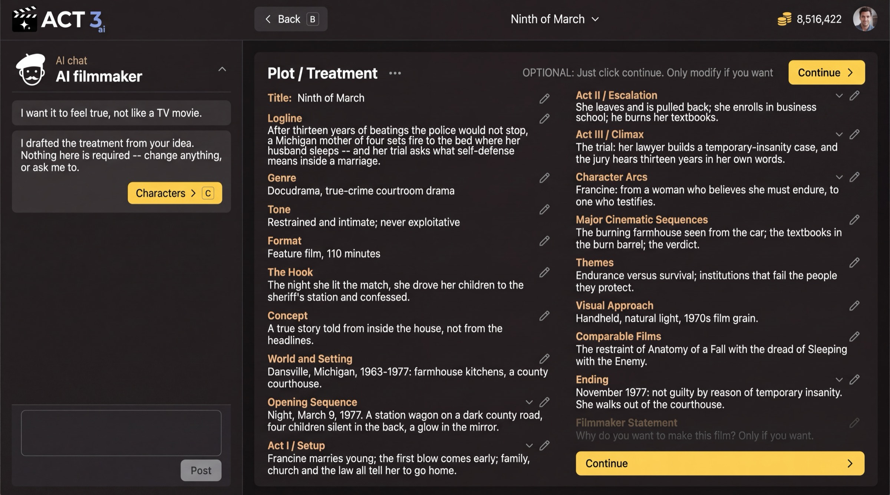

Step 4 of 8
Read the treatment
The AI Screenwriter writes a treatment: logline, genre, tone and the shape of your story. Wait for the draft, then read Plot / Treatment and fix anything that feels wrong. Click Continue › when it reads like your film.

The AI writes the treatment while you wait; then Plot / Treatment opens for you to read.
First the wait, then the treatment
The page AI Screenwriter is working on your idea shows each part as it is written: Logline, Genre and tone, then each act. The writing keeps going if you leave; you are told when the draft is ready. CONTINUE › stays quiet until then.
What a treatment is
A treatment is your film told as prose, before any scene is written. Plot / Treatment lists its parts: Title, Logline, Genre, Tone, Format, The Hook, Concept, World and Setting, Opening Sequence, each act, Character Arcs, Themes, Visual Approach, Comparable Films and Ending.
What to check
- Logline: one or two sentences that say who wants what and what stands in the way. If it is wrong, everything after it is wrong.
- Ending: make sure it lands where you want. The acts are built backward from it.
- Tone and Visual Approach: these steer the look later.
Press the pencil beside any section to edit it, or type a note to the AI filmmaker in the chat on the left ("make it feel true, not like a TV movie"). The page says it plainly: OPTIONAL: Just click continue. Only modify if you want.
Why you go next to the acts
The treatment is the story in one piece. Next the AI breaks it into acts, so you can check the structure before beats and scenes are written.